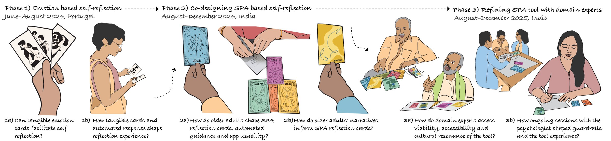

i.
the design process
The work moved through three phases between June and December 2025: emotion-based self-reflection in Portugal, co-designing SPA-based self-reflection with older adults in India, and refining the tool with domain experts in India.
